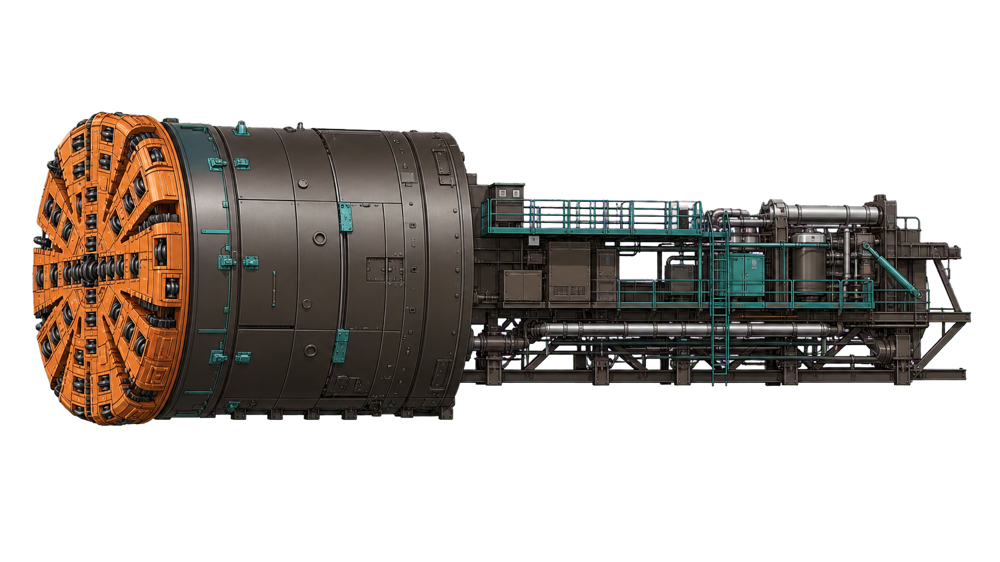

澳门人工岛污水处理厂项目
盾构机实时监测中心
TBM-01掘进中
盾构机实时态势
当前里程 K1+296.0
TBM-01盾构机
水平偏差+8 mm
垂直偏差-5 mm
最近 30 分钟趋势
掘进速度土仓压力
5042.535
14:0614:1214:1814:2414:30现在
最新运行事件
- 刀盘扭矩短时偏高持续 18 秒，当前已恢复正常已恢复
- 第 864 环开始推进姿态复核完成，推进系统启动运行
- 同步注浆参数确认注浆压力与流量处于设定范围正常